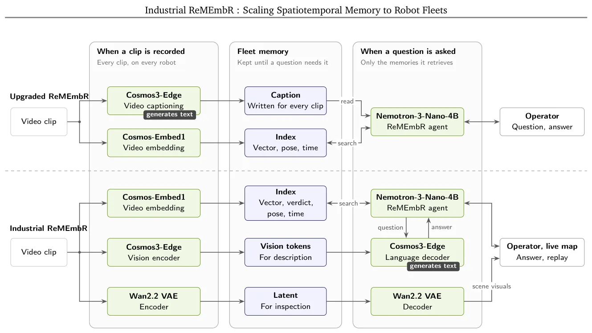
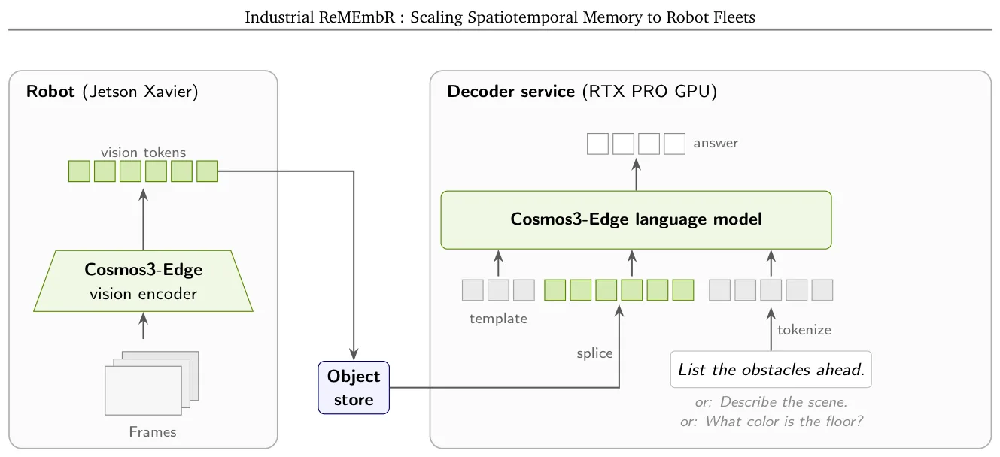
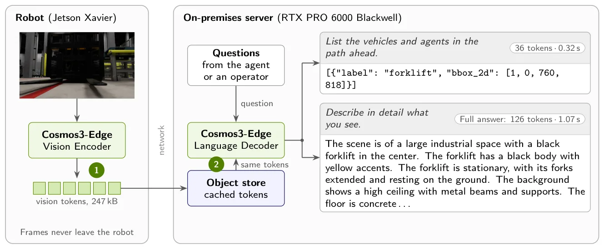
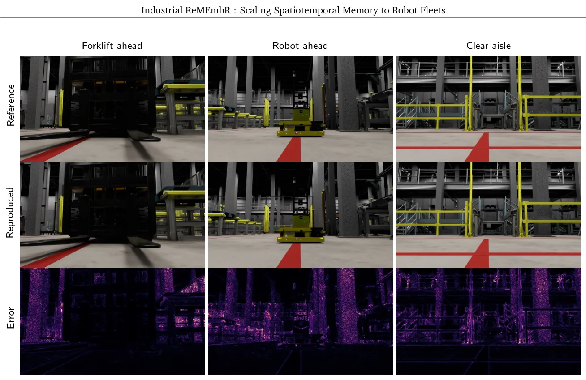

O Problema da Cegueira Semântica em Frotas de Robôs
Em armazéns modernos, a gestão de frotas (fleet management) orquestra dezenas de Robôs Móveis Autônomos (AMRs). No entanto, existe um gap crítico: cada robô vê obstáculos, congestionamentos e mudanças no ambiente, mas essas observações são efêmeras. O sistema de gestão central sabe onde cada robô está, mas não sabe o que eles estão vendo além dos limites de navegação imediata.
Sem memória, quando um robô desvia de um obstáculo não rastreado, ele perde tempo. Dias depois, um operador vê que a eficiência caiu, mas não sabe por quê. O contexto visual que causou o atraso foi perdido. A solução proposta pelo paper, chamado Industrial ReMEmbR, é criar uma memória espaciotemporal compartilhada, onde cada robô atua como um repórter vivo, contribuindo observações ricas e semânticas para um banco de dados comum.
O trabalho original, ReMEmbR, demonstrou que um único robô pode construir essa memória a partir de seu fluxo de câmera. Mas escalar isso para uma frota quebra três suposições fundamentais: o custo de processamento cresce linearmente com o número de robôs, a necessidade de estado do ambiente é contínua (não apenas sob demanda), e as perguntas que faremos à memória são desconhecidas no momento da gravação.
Arquitetura: Codificação Única e Interpretação Sob Demanda
Para resolver os gargalos de escala, o Industrial ReMEmbR separa radicalmente a escrita da memória da leitura. Em vez de gerar uma legenda textual para cada clip de vídeo assim que ele é gravado (write-time), o sistema codifica o vídeo uma única vez em representações compactas. A interpretação textual só acontece quando uma consulta específica é feita (on-demand).
Em cada robô, um módulo NVIDIA Jetson processa os clipes de vídeo. Ele não envia os frames brutos para a nuvem ou servidor local. Em vez disso, ele gera três tipos de representações: embeddings de recuperação (para busca semântica), tokens visuais (para compreensão contextual) e latentes de reconstrução (para reconstrução visual futura).
Essa abordagem de 'encode once, interpret many' é o coração da economia de recursos. O servidor recebe apenas metadados compactos e tokens visuais. Quando uma pergunta chega, o sistema recupera os tokens visuais correspondentes e os alimenta a um decoder de linguagem, gerando a resposta ou legenda naquele exato momento. Isso elimina a necessidade de processamento contínuo de geração de texto para todas as observações que nunca serão questionadas.

O Split Cosmos3-Edge e a Privacidade
Um detalhe técnico crucial é a divisão do modelo Cosmos3-Edge. Os autores dividiram o modelo na fronteira entre visão e linguagem. O encoder de visão roda no robô (edge), enquanto o decoder de linguagem roda no servidor on-premises. Isso permite que o servidor gere descrições ricas usando os tokens visuais pré-computados, sem nunca ter acesso aos frames de vídeo brutos.
Isso traz benefícios de privacidade (GDPR) e segurança. Se for necessário anonimizar pessoas, o robô pode detectar rostos nos patches de imagem e zerar os tokens visuais correspondentes antes de enviá-los ao servidor. O servidor nunca vê a imagem original, apenas tokens já abstraídos, garantindo conformidade sem sacrificar a utilidade da memória para navegação e planejamento.
Os modelos utilizados na pipeline foram atualizados em relação ao ReMEmbR original. O captioner VILA-1.5-13B foi substituído pelo Cosmos3-Edge, e o índice de texto MxBai foi trocado pelo Cosmos-Embed1, que indexa diretamente o vídeo, melhorando a precisão da recuperação. O agente de QA foi atualizado para o Nemotron-3-Nano-4B.

Resultados: Precisão e Eficiência
A avaliação do sistema responde a quatro perguntas principais. Primeiro, os novos modelos melhoram a recuperação e resposta? Sim. No benchmark NaVQA, a troca para o Nemotron-3-Nano-4B foi a mudança mais impactante para a confiabilidade. Ele reduziu falhas de parseamento na primeira tentativa de 20,7% para 13,8% e respostas não classificáveis de 4,5% para 1,9%. Curiosamente, o Nemotron tem metade dos parâmetros do Llama-3.1-8B anterior, sugerindo que o ganho vem do pós-treinamento para uso de ferramentas e saída estruturada, não do tamanho.
A recuperação (recall) melhorou principalmente com o novo índice Cosmos-Embed1. Ao indexar o vídeo diretamente em vez de usar legendas de texto, o recall subiu de 20,8% para 24,6%. Isso indica que a representação visual direta captura nuances que o texto pode perder ou simplificar excessivamente.
Segundo, uma única codificação pode responder a qualquer pergunta futura? Sim. O sistema demonstrou que os tokens visuais em cache servem para múltiplas perguntas sobre a mesma cena sem necessidade de reprocessamento. Isso valida a premissa de que a informação visual é preservada de forma agnóstica à pergunta específica.
Custo Computacional e Mapa de Tráfego em Tempo Real
A terceira pergunta é sobre a escalabilidade de custos. Modelando uma frota de 100 robôs com intervalos de gravação de 12 segundos, a geração de legendas para 100% das memórias exigiria 36,25 equiválentes de GPU. Com a abordagem sob demanda (apenas 10% das memórias descritas), o custo cai para 1,04 GPU equivalents. Isso representa uma economia massiva, tornando viável manter uma memória rica sem quebrar o orçamento de computação.
Quarto, a memória pode manter um mapa de tráfego vivo? Sim. O sistema classifica o tráfego (ex: corredor bloqueado, livre) diretamente a partir dos embeddings de recuperação no momento da codificação. Em testes com 914 frames simulados de armazém, a classificação baseada em embeddings atingiu 71,3% de acurácia balanceada, superando a melhor alternativa baseada em legendas com raciocínio em 6,0 pontos percentuais.
Isso significa que o sistema não apenas responde a perguntas históricas, mas fornece um estado atualizado do ambiente para o planejador de frotas, permitindo roteamento adaptativo em tempo real.

Limitações e Próximos Passos
Apesar dos resultados promissores, os autores destacam que engenharia adicional é necessária para produção. O Cosmos-Embed1 é o encoder mais lento no Jetson AGX Xavier, sendo o primeiro alvo para otimização com TensorRT e fine-tuning. Além disso, o provisionamento do agente deve considerar a carga de trabalho de atualização do mapa e a cadência de polling.
Outra limitação é que a fidelidade da reconstrução visual, embora funcional, depende da qualidade dos latentes do Wan2.2 VAE. O paper mostra que a reconstrução é fiel o suficiente para inspeção, mas não necessariamente perfeita para análise forense detalhada.
Os autores planejam extensões futuras, incluindo planejamento de frota consciente de congestionamentos, orientação semântica para políticas de navegação e curadoria contínua de dados para ajuste fino de modelos. Também investigam a implementação de agentes diretamente nos dispositivos edge dos robôs e o uso de iw.shield para proteção cibernética.

Conclusão: Uma Memória Reutilizável
O Industrial ReMEmbR apresenta uma arquitetura de memória reutilizável onde a codificação, armazenamento, mapeamento e interpretação operam como serviços independentes. Isso permite que múltiplas aplicações reutilizem cada observação e que modelos individuais sejam substituídos independentemente.
Ao adiar a geração de legendas, o sistema remove a geração de texto do caminho de escrita da memória, focando em eficiência. A indexação baseada em vídeo melhora a recuperação, e o uso de tokens visuais em cache permite respostas ricas sem reenvio de vídeo.
Para desenvolvedores e cientistas de dados que trabalham com robótica, o paper oferece um blueprint claro para escalar a percepção de robôs individuais para inteligência coletiva de frotas, equilibrando custos de computação com riqueza semântica.
O que fica
- Industrial ReMEmbR escala a memória espacial de um robô para uma frota inteira, permitindo que observações de um robô sejam consultadas por qualquer outro ou pelo sistema de gestão.
- A geração de legendas (captions) é adiada até que uma pergunta seja feita, economizando até 35x em poder de GPU comparado à geração contínua de texto.
- O sistema utiliza tokens visuais em cache no servidor para responder a perguntas e reconstruir cenas, sem precisar reenviar os frames de vídeo brutos.
- A troca para o agente Nemotron-3-Nano-4B reduziu falhas de parseamento em 33% e respostas não classificáveis em mais de 50%, apesar de ter metade dos parâmetros do modelo anterior.
Paper original: Industrial ReMEmbR: Scaling Spatiotemporal Memory to Robot Fleets
Comentários
Nenhum comentário ainda. Seja o primeiro.